| |
|
ENKESİT TASARIMI ARAÇLARI MENÜSÜ
|
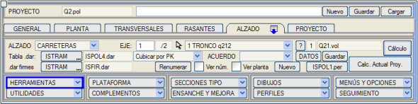
Geçiş Noktaları Oluştur Profil ve deverlerle oluşturulan düzlemi, geçiş noktalarını alan güzergaha yansıtarak bu noktaları oluşturmayı sağlar. Geçiş noktalarını alan güzergahın dever ekseninde bir değişiklik olması durumunda, plandaki eksene bir mesafe girmeme olanak tanır. Bu şekilde, bir otoyolun beyaz şeridi üzerine kotu yansıtabiliriz. Geçiş noktasıyla gösterilen etikette bu mesafe dikkate alınır. 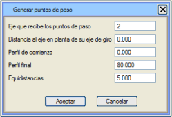
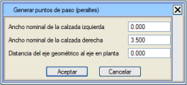Program, Profil menüsünden yükleyebileceğimiz bir .pas dosyası kaydeder. Ayrıca, belirttiğimiz nominal genişliğe bağlı olarak kavşak kolunun bir kotunu elde edeceği ve böylece deverlerini belirleyeceği bir .prl dever dosyası da kaydetmeme olanak tanır. Hesaplanan deverlerin oluşturulmasında, geometrik eksen ile plan ekseni arasındaki mesafe de sorulur; bu, eksantrikliği ve/veya kaydırılmış dever ekseni olan güzergahlarda deverlerin doğru bir şekilde hesaplanmasını sağlar. Kısa Liste KM, Mesafe komutuyla aynıdır, ancak daha az bilgi içeren kısaltılmış bir liste alırım. 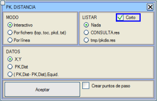
Eğer seçenek etkinleştirilirse: Geçiş noktaları oluştur, mevcut güzergah üzerine tıklanan geçiş noktalarını kaydedeceği bir dosya adı girmeye izin verir. .vol Dosyasını Yansıt Belirttiğimiz güzergahın kesit verilerini, üzerinde bulunduğumuz güzergaha yansıtır. 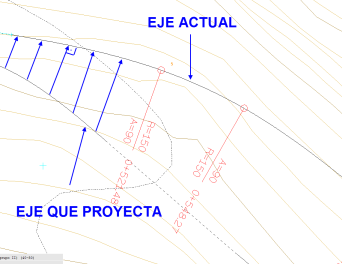
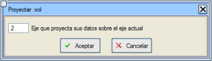
İkinci güzergahın başlangıç KM'sinden önce veya bitiş KM'sinden sonra yansıtılan KM'ler için, orijinal güzergahtaki KM farklarına göre, ikinci güzergah içinde yansıtılabilen ilk veya son noktayla bir KM atanır. Notlar:
KM Ekle .vol dosyasında kayıtlı olan tüm tanımlanmış verilere (profiller, menholler, borular, genişlikler, deverler, dever eksenleri, orta refüj ve eksantriklik...) KM ekler. Program, komut satırında başlangıç KM'sini ve KM artışını sorar. 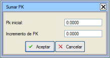
XYZ .hpr Oluştur Eski Virtual 3D modülünde içe aktarılabilen bir dosya oluştururdu. Günümüzde Virtual 3D, güzergah boyunca görselleri kendi modülünden oluşturabilmektedir. HPR, Yön (yatay açı), Eğim (eğim) ve Yuvarlanma (yan eğim, dever) anlamına gelir. Listede X, Y, Z koordinatlarını, yatay açıyı ve yan eğim açısını elde edeceğim. 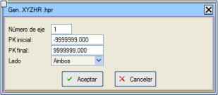
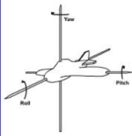

Katı Model Oluştur Bir güzergah veya güzergah grubu için bir Blok (.b3d) oluşturmayı sağlar. Ayrıca, Virtual 3D modülünde kullanılabilmeleri için güzergahtan kamulaştırma sınırlarına kadar uzanan yüzey kaplama dosyaları da oluşturur. Kamulaştırma sınırı içindeki arazi şeridini de içerebilen .ttp üçgenleme dosyaları da oluşturulur. Bir profil boyunca yüzey kaplamalarının başlangıcını ve sonunu tanımlayan dosya ISPOL.esc'dir. Her bir yüzey kaplamasının profilin hangi kodları arasında çizileceğini, hangi renge sahip olacağını ve hangi dosyada saklanacağını tanımlamayı sağlayan bu dosyayı düzenleme imkanımız var. Bu iletişim kutusunda, katı modelin oluşturulacağı güzergahları seçebileceğiz. Şunlar belirtilebilir:
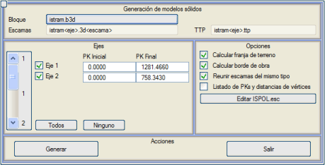
Bağlantı Tam menüdeki Otomatik Sınır Çizgisi'ne eşdeğer bir araçtır. Kırp Bu seçeneğe basıldıktan sonra, ekranda görünen çizgilerden biri seçilir ve sistem, üzerinde bulunduğumuz güzergahı bu çizgiyle kırparak bir .lfr dosyası kaydeder. Mevcut güzergahın daha önce hesaplanmış olması gerekir. Z -> L53 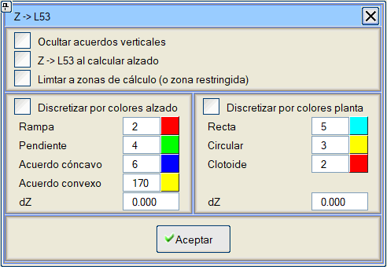Bu araçla, plandaki güzergah hesaplamasında oluşturulan çizgilerin (L53) köşe noktalarına, ilgili güzergahın profil kotunu atarız. Bu komut, plandaki güzergah çizgisinin (L53) kot değişikliğine, düşey kurpların giriş ve çıkış noktalarını ve parabollerin bir ayrıklaştırılmasını da ekler. Plandaki (Düz, Dairesel ve Klotoid) ve düşey güzergahtaki (Rampa, Eğim, Tepe Kurp veya Dere Kurp) eleman tipine göre renklerle bir ayrıklaştırma da aynı anda yapılabilir. Her ikisini ayırt edebilmek için, her birine bir dZ değeri girilebilir. Düşey kurpları gizle, düşey kurp bölgesinde bulunan çizgi parçasını gizlememe olanak tanır. Enkesit Hesaplanırken Z -> L53, bir enkesit hesaplaması her çalıştırıldığında bu aracı otomatik olarak çalıştıracaktır. Eğer Yapılandırma > Tercihler > Plan > Güzergahları 8D çizgilerle çiz menü seçeneği etkinse, bu komut, bu kutucuk etkin olmasaydı olduğu gibi, 8D çizgisini profil kotuna yerleştirir. 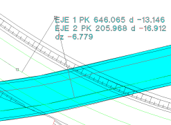Gabari Bu araç, iki güzergahın platformlarının imleç üzerinde sunduğu kot farkını bildiren bir Gösterge oluşturur.- Geçiş rampaları, duvar+döşeme yükseklikleri tablosu, hesaplanan deverler tablosu, diğer genişlikler, bağımsız genişlikler ve KM'lere göre bordürler. Komuta basıldığında, iki güzergahı seçmemiz istenir. Ardından, imlecin noktası için program, her bir güzergahın kotunu ana taşıt yollarının deverlerine göre yansıtır. Ekranda, her güzergah için KM, mesafe ve noktaya yansıtılan kotların farkı hakkında bilgi verilir. Eğer herhangi bir yakalama modu kullanılırsa, analiz edilen nokta yakalanan noktadır. Aktif Güzergahların Kenarları Bu seçenek, ENKESİT TASARIMI → ARAÇLAR'dan erişilebilir ve her bir güzergahın her bir bölümünü çevreleyen çizgileri, Virtual 3D® modülünün yapacağı gibi oluşturmayı sağlar; yani, bir yandan her bir sanat yapısı veya tünel bölümünü dikkate alarak ve diğer yandan sanat yapıları ile tüneller arasındaki bölümlerin kenarlarını çizerek. Eğer kesitimizde herhangi bir dolgu kaplaması tanımlanmışsa, aktif kenarları elde etmek için .lil Düzenle'ye kenarlar alt menüsü aracılığıyla gitmemiz gerekecektir. 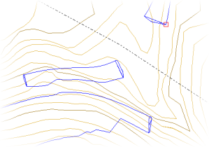
Profil Noktaları Menüyü başlattığınızda, dosya seçme seçeneği sunulur: 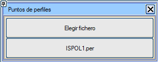 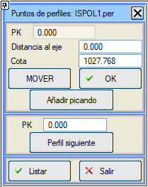Bu araç, profillerde interaktif olarak seçtiğimiz noktaların, KM, eksene olan mesafe ve kot bilgilerini içeren listeler oluşturmayı sağlar. Mesafeler ve kotlar, Taşı komutuyla manuel olarak veya ekranda tıklayarak değiştirilebilir. OK komutuyla mevcut veriyi listeye ekleriz. Tıklayarak Ekle butonuyla, Taşı ve OK tuşlarına basmaya gerek kalmadan profilin birkaç noktasını ekleyebilirsiniz; seçim, İptal'e basarak veya klavyedeki [Esc] tuşuyla durdurulur. Önceki profile geri dönme veya önceki herhangi bir KM'ye geri dönme imkanı. Listele komutu, mevcut listeyi kapatır ve gösterir ve mevcut KM'den yeni bir liste oluşturmayı sağlar. Doğrudan herhangi bir KM'ye ilerleyebilir veya Sonraki Profile gidebilirsiniz. Çıkış seçeneği, son listeyi kapatır ve gösterir ve araçtan çıkar. 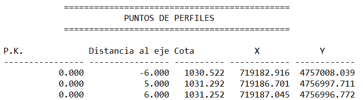
Çizgilerle Gabariler TAMAMI menüsündeki Gabariler aracına benzer bir araçtır, ancak bu durumda ilk güzergah mevcut güzergahtır ve ikinci güzergah, kullanıcının tek tek veya tipe göre seçebileceği kotlu bir dizi çizgiyle değiştirilir. Bir KM grafiksel olarak seçilir ve tanımlanan pay ile çalışma alanı sınırlandırılır. Yani, seçilen kodlara sahip çizgilerin kesişimleri (şerit ve/veya banket veya palye kenarları) sadece, seçilen KM'ye olan mesafesi paya eşit veya daha az olanlar dikkate alınır. Geçiş noktası dosyaları gal_1_Lin.pas (gal_1D_Lin.pas ve gal_1I_Lin.pas otoyollarda) adını alır. 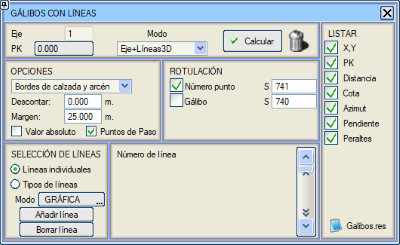
Bu araç, ikinci bir çalışma modu olan Güzergah + 2D Çizgi + Güzergah'ı sunar (Mod açılır menüsünde mevcuttur), şu şekilde çalışır:
Görünümdeki Yüzeyi Üçgenle Bu araç, mevcut güzergahın veya her bir aktif güzergahın (kavşakların kurpları dahil) Bordürler + S67 + S68 + ... görünen yüzeyiyle bir .ttg dosyası oluşturur. Mevcut güzergah veya tüm güzergahlar için oluşturulabilir. Mevcut güzergahı seçme durumunda,  + Kurplar seçeneğiyle, diğer güzergahlara karşı kavşak veya döner kavşaklardaki kurpların kapladığı alanı aynı güzergaha ekleyebilirsiniz. + Kurplar seçeneğiyle, diğer güzergahlara karşı kavşak veya döner kavşaklardaki kurpların kapladığı alanı aynı güzergaha ekleyebilirsiniz.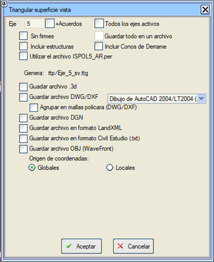
"Tümünü bir dosyaya kaydet" seçeneği işaretlendiğinde, tüm aktif güzergahların geometrisi tek bir dosyaya kaydedilir. Bu seçeneği kullanabilmek için önceden "Tüm aktif güzergahlar" seçeneğinin işaretlenmiş olması gerekir. Eğer [ ] Üstyapısız seçeneği etkinleştirilirse, hesaplamaya ne bordürleri ne de S67'yi dahil etmez. Viyadüklerde ve tünellerde platformu dahil edebilir veya [ ] Sanat Yapılarını Dahil Et'i etkinleştirerek üst üste binen yüzeyleri üçgenleyebiliriz. [ ] Yaklaşım Dolgularını Dahil Et seçeneği etkinleştirildiğinde, yaklaşım dolgularının görünen yüzeyini dahil eder. Eğer projeye KAVŞAK KOLU EKLE seçeneğini kullanırsak ve Mevcutları Genişlet seçeneğini etkinleştirmişsek, ilgili seçeneği etkinleştirerek bu araçta ISPOLn_AR.per dosyasını kullanabiliriz. Sonuç dosyaları, proje klasörünün Trisup alt klasöründe kalır. .vol Dosyasını Kırp 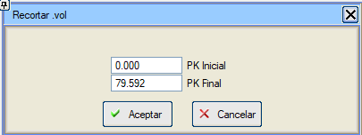Aşağıdaki Enkesit Tasarımı veri tablolarının verilerini iki KM arasında kırpabilirsiniz. Bu araç, .vol Yansıt'a da dahildir. Eğer kırpmanın başlangıç km'sinde veri yoksa, önceki veri bırakılır ve eğer kırpmanın bitiş km'sinde veri yoksa, sonraki veri bırakılır.
|